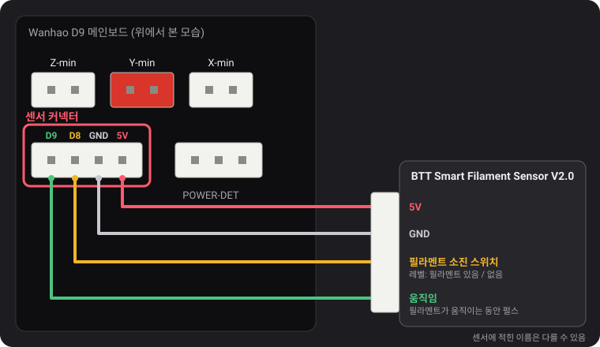
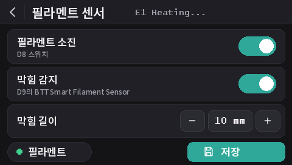

필라멘트 센서
v2.0.5부터 이 펌웨어는 두 종류의 센서를 읽습니다. Wanhao의 필라멘트 소진 스위치, 그리고 필라멘트가 움직이지 않을 때(엉킨 스풀, 막힘, 갈려 나간 필라멘트)도 알아차리는 BTT Smart Filament Sensor V2.0입니다. 필라멘트 소진 감지는 모든 모델에서 기본으로 켜져 있고, 막힘 감지는 꺼져 있습니다.
센서 커넥터

POWER-DET 왼쪽, 엔드스톱 커넥터 아래에 있는 4핀 커넥터에는 D9, D8, GND, 5V가 이 순서대로 있습니다. 핀 이름은 dustovich가 찾아내 Discord에 공유한 Wanhao 배선도에서 가져왔습니다. 보드 뒷면에는 같은 네 핀이 CTRL, BTN, GND, VCC로 인쇄되어 있습니다.
- D8은 Wanhao 순정 펌웨어가 읽는 필라멘트 소진 입력입니다.
- D9는 Wanhao 펌웨어가 사용하지 않습니다. 이 빌드는 여기서 BTT 센서의 움직임 신호를 읽습니다.
화면에서
화면에 DGUS Reloaded 2.0이 설치되어 있다면(펌웨어 v2.0.9 이상): 설정 → 필라멘트 → 필라멘트 센서.
- 필라멘트 소진: 모든 감지를 켜거나 끕니다.
M412 S1/M412 S0과 같습니다. - 막힘 감지: 아래 길이로 막힘 감지를 켜거나 끕니다(
L0). - 막힘 길이: −와 +로 1 mm씩 바꿉니다. 숫자를 누르면 직접 입력할 수 있습니다.
- 필라멘트 표시등은 소진 스위치가 필라멘트를 감지하면 초록색, 감지하지 못하면 빨간색입니다.
- 변경 사항은 바로 적용됩니다. 저장을 누르면
M500처럼 저장됩니다. 뒤로 화살표로 나가면 저장되지 않고, 다음 부팅 때 저장된 설정으로 돌아갑니다.

M412 명령
모든 설정은 시리얼 터미널(Pronterface, 슬라이서나 OctoPrint의 터미널,
250000 baud)에서 USB로 합니다. 여러 파라미터를 한 명령에 함께 쓸 수 있습니다. 예: M412 S1 L10.
| 명령 | 동작 |
|---|---|
M412 | 상태를 표시합니다. 예: Filament runout ON ; Distance 5.00mm ; Motion distance 0.00mm. |
M412 S1 | 감지를 켭니다: 필라멘트 소진 스위치, 그리고 막힘 길이가 0이 아니면 막힘 감지도 켭니다. |
M412 S0 | 스위치와 막힘을 포함한 모든 감지를 끕니다. |
M412 D5 | 스위치가 필라멘트 없음을 감지한 뒤, 센서와 노즐 사이에 남은 필라멘트를 쓰기 위해 5 mm 더 출력한 다음 일시 정지합니다. 기본값 5 mm. |
M412 L10 | 막힘 감지를 켭니다(BTT 센서 전용): 센서 바퀴가 돌지 않은 채 필라멘트 10 mm가 익스트루더를 지나가면 일시 정지합니다. |
M412 L0 | 막힘 감지를 끄고 필라멘트 소진 스위치는 그대로 둡니다. 이것이 기본값입니다. |
M500 | 설정을 저장합니다. 저장하지 않으면 프린터를 끌 때 변경 사항이 사라집니다. |
M119 | filament 줄이 필라멘트가 있으면 TRIGGERED, 없으면 open으로 표시됩니다. |
M412 L0과 단독으로 쓰는 L은 저희가 Marlin에 제안한 변경
(MarlinFirmware/Marlin#28585)에서 온 것으로, 이 펌웨어에 포함되어 있습니다. 이 변경이 없는 Marlin에서는 L
단독 사용은 무시되고, L0은 곧바로 막힘으로 판단해 출력을 일시 정지합니다.
Wanhao 필라멘트 소진 스위치
필라멘트가 있는지 없는지를 펌웨어에 알려 줍니다. 필라멘트가 없어지면 필라멘트 5 mm를 더 출력한 뒤 일시 정지하고, 화면에서 필라멘트 교체가 시작됩니다.
v2.0.8부터 모든 모델에서 기본으로 켜져 있습니다. D8에 아무것도 꽂혀 있지 않으면 보드의 풀업 저항이 핀을 5 V로 유지하고, 이는 "필라멘트 있음"으로 읽힙니다. 그래서 감지가 절대 트리거되지 않으므로, 센서 장착 여부와 상관없이 켜 두어도 됩니다. D8에 소진 스위치를 꽂으면 바로 작동합니다.
- 막힘 감지는 꺼진 상태(
L0)로 유지됩니다. 이 스위치는 필라멘트의 움직임을 볼 수 없습니다. - 스위치를 끄려면:
M412 S0후M500. - 이전 릴리스에서 저장한 설정은 켜짐/꺼짐 상태를 그대로 유지합니다. 켜려면:
M412 S1후M500, 또는 기본값으로 초기화하세요(M502후M500. 프로브 Z 오프셋과 메시도 지워집니다).
BTT Smart Filament Sensor V2.0
이 센서에는 출력이 두 개 있고, 펌웨어는 두 출력을 서로 다르게 읽습니다.
- 필라멘트 소진 스위치(D8로)는 레벨 신호입니다. 필라멘트가 있는 동안 5 V, 없어지면 0 V입니다.
- 움직임 출력(D9로)은 필라멘트가 지나가면서 돌리는 작은 바퀴에서 나옵니다. 필라멘트가 몇 mm 움직일 때마다 출력이 0 V와 5 V 사이에서 바뀝니다. 펌웨어는 이 변화만 지켜봅니다. 익스트루더가 막힘 길이만큼 필라멘트를 밀어내는 동안 변화가 한 번도 없으면 필라멘트가 따라오지 않는 것이므로(엉킨 스풀, 막힘, 갈려 나간 필라멘트) 출력을 일시 정지합니다. 소진 스위치는 이를 알 수 없습니다. 막혀 있어도 필라멘트는 그대로 있기 때문입니다.
배선
5V는 5V에, GND는 GND에, 필라멘트 소진 스위치 신호는 D8에, 움직임 신호는 D9에 연결합니다. 센서 케이블에 인쇄된 이름은 다를 수 있습니다.
켜기
M412 S1 L10
M500이유 없이 출력이 일시 정지되면 막힘 길이를 늘리세요: M412 L15 후 M500. 필라멘트 소진
스위치만 쓰려면: M412 L0 후 M500.
확인하기
M412: Filament runout ON ; Distance 5.00mm ; Motion distance 10.00mm.- 필라멘트를 넣은 상태에서
M119: filament: TRIGGERED. 필라멘트를 넣거나 뺄 때가 아니라 손으로 밀어 넣을 때 이 줄이 바뀐다면 두 신호선이 뒤바뀐 것입니다: D8과 D9를 서로 바꾸세요.
L0은 절대
트리거되지 않음), BTT 센서 자체로는 아직 테스트하지 않았습니다. 스위치가 반대로 읽힌다면(필라멘트를 넣었는데
open) Discord에서 알려 주세요.v2.0.5 또는 v2.0.6에서 업데이트할 때
이 릴리스들은 막힘 감지를 끌 방법이 없어서, 절대 도달하지 않을 만큼 긴 막힘 길이를 사용했습니다. v2.0.5는 100 m
(실제로는 너무 짧았습니다: 1 kg 스풀의 약 3분의 1 정도로, 그 뒤에는 켜 둔 프린터가 괜히 일시 정지할 수 있었습니다),
v2.0.6은 10 km였습니다. v2.0.7은 프린터가 시작될 때 이 두 값을 L0으로 불러옵니다. BTT 센서용으로 직접 설정한
실제 길이(예: L10)는 유지됩니다. v2.0.4 이하에서 업데이트하면, 그 버전들이 저장한 0 대신 5 mm 필라멘트 소진 거리를
불러옵니다.